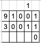
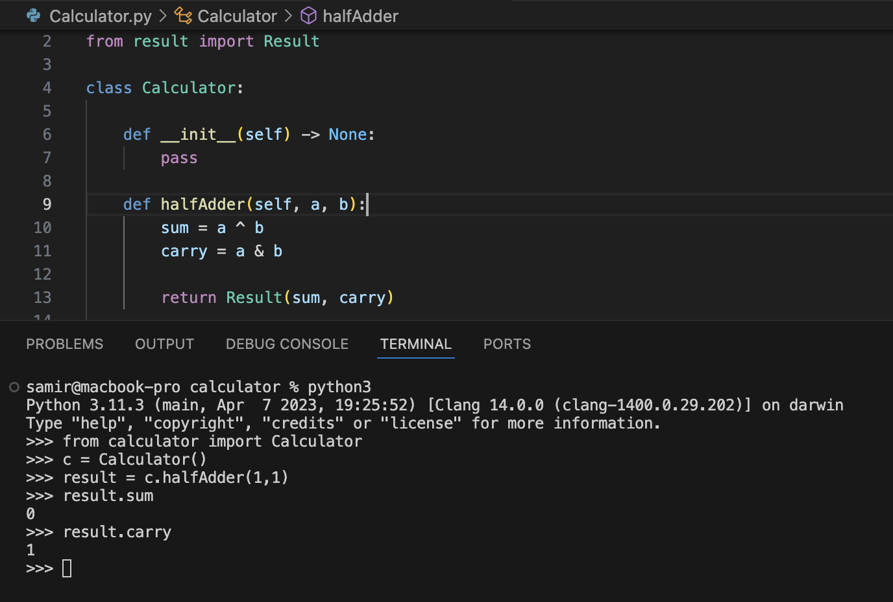

Esse post faz parte da série Implementando uma calculadora binária ou um título mais apropriado no futuro.
O que será necessário para entender o post?
- saber somar 1 + 1 (em bits)
- conhecer um pouco de python
- tempo suficiente para perder aqui
Indo direto ao ponto, vamos implementar um meio somador com python, mas ORAS, o que é um meio somador?
Segundo o google chatgpt:
Um meio somador é um circuito digital que realiza a adição de dois bits, gerando uma soma e um carry (vai-um). Ele possui duas entradas (os bits a serem somados) e duas saídas (a soma e o carry).
Tabela verdade:
| Entrada A | Entrada B | Soma (S) | Carry (C) |
|---|---|---|---|
| 0 | 0 | 0 | 0 |
| 0 | 1 | 1 | 0 |
| 1 | 0 | 1 | 0 |
| 1 | 1 | 0 | 1 |
Essa tabela verdade é um pouco diferente da que vimos na faculdade ou nos cursos da vida, mas de onde tiraram ela? Do que é formada?
Um meio somador utiliza as portas duas portas lógicas, AND e XOR.
Os bits passam pelas duas portas, por isso temos duas saídas.
Observação: Não adianta eu falar sobre portas lógicas aqui, isso tem em todo lugar e gente explicando MUUUUUITO melhor que eu. Se você não manja, obrigado pelo carinho de ler até aqui ❤
Exemplo Link to heading
Vamos somar 9 + 3.
9 = 1001
3 = 0011

De acordo com a nossa tabela verdade, quando temos dois bits com o valor 1, nossa soma é zero e carregamos o valor 1 para a próxima casa (aquele bitzinho lá em cima, igual fazemos continha de mais quando o valor ultrapassa uma casa decimal).
Vamos fazer isso em python agora Link to heading
Podemos criar uma classe com uma função chamada halfAdder que recebe dois bits e uma classe chamada result que vai armazenar apenas o valor somado e carregado para fins de organização.

- na linha 10 temos um XOR de 1 e 1
- na linha 11 temos um AND para pegar o carry de 1 e 1
TÁ SAMI, mas ai tu tá sendo leigo pô. Qual a razão de tudo isso? Onde eu enfio esse bit carregado?
Nos vemos no próximo post.